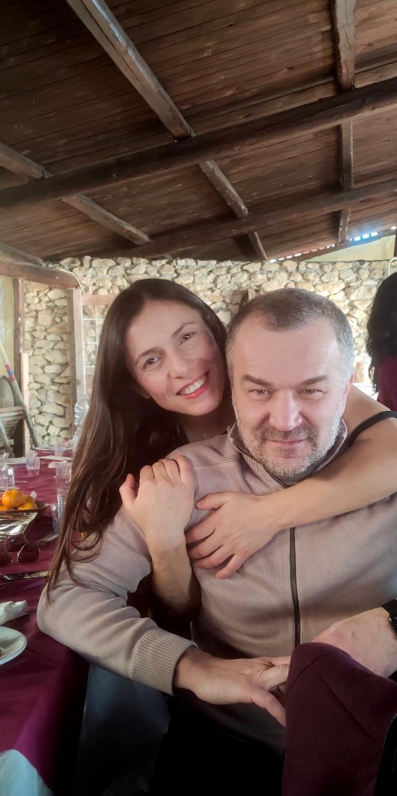

Benvenuti nel Sito Ufficiale del matrimonio di Giusy e Andrea
Siamo felici di invitarvi al nostro matrimonio al caldo!
Clicca sull'icona rossa nella ridente e selvaggia Brianza per scoprirne di più!
Siamo felici di invitarvi al nostro matrimonio al caldo!
Clicca sull'icona rossa nella ridente e selvaggia Brianza per scoprirne di più!